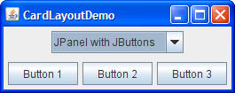
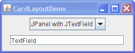
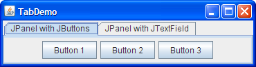

Note: This lesson covers writing layout code by hand, which can be challenging. If you are not interested in learning all the details of layout management, you might prefer to use theGroupLayoutlayout manager combined with a builder tool to lay out your GUI. One such builder tool is the NetBeans IDE. Otherwise, if you want to code by hand and do not want to useGroupLayout, thenGridBagLayoutis recommended as the next most flexible and powerful layout manager.The following figure represents a snapshot of an application that uses the
CardLayoutclass to switch between two panels. 
Click the Launch button to run CardLayoutDemo using Java™ Web Start (download JDK 6). Alternatively, to compile and run the example yourself, consult the example index.
The complete code of this demo is in the CardLayoutDemo.javafile.The
CardLayoutclass manages two or more components (usuallyJPanelinstances) that share the same display space. When using theCardLayoutclass, let the user choose between the components by using a combo box. TheCardLayoutDemoapplication is an example to illustrate this feature.Another way to accomplish the same task is to use a tabbed pane. The following picture shows a tabbed pane version of the preceding example:
 Because a tabbed pane provides its own GUI, using a tabbed pane is simpler than using the
CardLayoutclass. For example, implementing the preceding example using a tabbed pane results in a program with fewer lines of code.Click the Launch button to run TabDemo using Java™ Web Start (download JDK 6). Alternatively, to compile and run the example yourself, consult the example index.
The complete code of this demo is in the TabDemo.javafile.Conceptually, each component that a
CardLayoutmanages is like a playing card or trading card in a stack, where only the top card is visible at any time. You can choose the card that is showing in any of the following ways:The
- By asking for either the first or last card, in the order it was added to the container
- By flipping through the deck backwards or forwards
- By specifying a card with a specific name
CardLayoutDemoclass uses the last scheme.The following code snippet from the
CardLayoutDemo.javaapplication creates theCardLayoutobject and the components it manages.To add a component to a container that a//Where instance variables are declared: JPanel cards; final static String BUTTONPANEL = "Card with JButtons"; final static String TEXTPANEL = "Card with JTextField"; //Where the components controlled by the CardLayout are initialized: //Create the "cards". JPanel card1 = new JPanel(); ... JPanel card2 = new JPanel(); ... //Create the panel that contains the "cards". cards = new JPanel(new CardLayout()); cards.add(card1, BUTTONPANEL); cards.add(card2, TEXTPANEL);CardLayoutobject manages, specify a string that identifies the component being added. For example, in this demo, the first panel has the string"Card with JButtons", and the second panel has the string"Card with JTextField". In this demo those strings are also used in the combo box.To choose which component a
CardLayoutobject shows, put additional code in your code example:This example shows that to use the//Where the GUI is assembled: //Put the JComboBox in a JPanel to get a nicer look. JPanel comboBoxPane = new JPanel(); //use FlowLayout String comboBoxItems[] = { BUTTONPANEL, TEXTPANEL }; JComboBox cb = new JComboBox(comboBoxItems); cb.setEditable(false); cb.addItemListener(this); comboBoxPane.add(cb); ... pane.add(comboBoxPane, BorderLayout.PAGE_START); pane.add(cards, BorderLayout.CENTER); ... //Method came from the ItemListener class implementation, //contains functionality to process the combo box item selecting public void itemStateChanged(ItemEvent evt) { CardLayout cl = (CardLayout)(cards.getLayout()); cl.show(cards, (String)vet.getItem()); }showmethod of theCardLayoutclass, you must set the currently visible component. The first argument in theshowmethod is the container theCardLayoutcontrols — that is, the container of the components theCardLayoutmanages. The second argument is the string that identifies the component to show. This string is the same string that was used when adding the component to the container.

The CardLayout API
The following table lists theCardLayoutclass methods that are used to choose a component. For each method, the first argument is the container for which theCardLayoutis the layout manager (the container of the cards theCardLayoutcontrols).
Method Purpose first (Container parent)Flips to the first card of the container. next (Container parent)Flips to the next card of the container. If the currently visible card is the last one, this method flips to the first card in the layout. previous (Container parent)Flips to the previous card of the container. If the currently visible card is the first one, this method flips to the last card in the layout. last (Container parent)Flips to the last card of the container. show (Container parent, String name)Flips to the component that was added to this layout with the specified name, using theaddLayoutComponentmethod.
Examples that Use CardLayout
Only one example in this trail usesCardLayout, and this is theCardLayoutDemo. Generally, our examples use tabbed panes instead ofCardLayout, since a tabbed pane provides its own GUI.